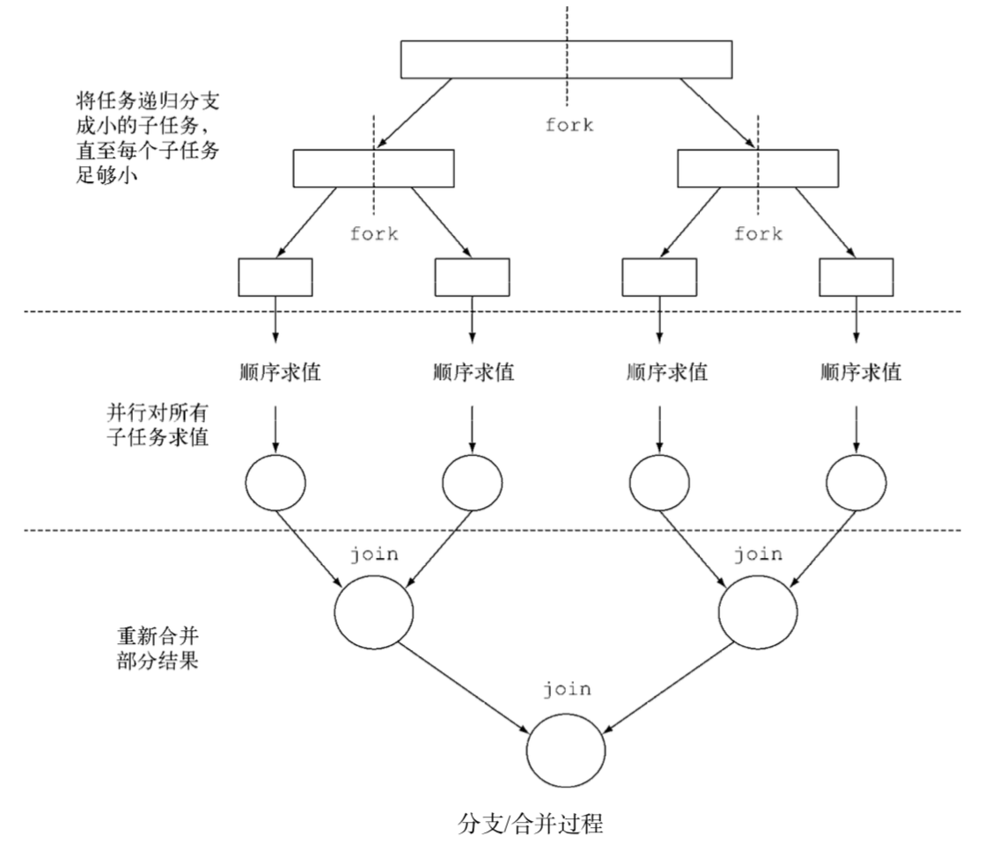
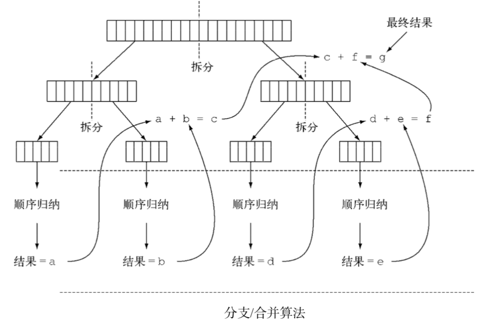
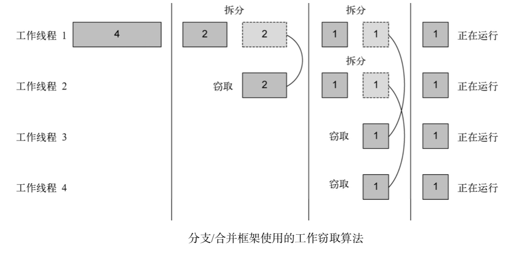

[TOC]
并行数据处理与性能
数值流，装箱和拆箱
- 将原始类型转换为对应的引用类型的机制，这个机制叫做
装箱。 - 将引用类型转换为对应的原始类型，叫做
拆箱。
java中装箱和拆箱是自动完成的, 但这在性能方面是要付出代价的，装箱的本质就是将原始类型包裹起来，并保存在堆里。因此装箱后的值需要更多的内存，并需要额外的内存搜索来获取被包裹的原始值。
List<Integer> list = new ArrayList<>();
for(int i = 0 ; i < 100 ;i++){
// int被装箱成Integer
list.add(i);
}
Java8 引入了三个原始类型特化流来解决这个问题；IntStream、DoubleStream、LongStream分别将流中元素特化为int、double、long，从而避免了暗含装箱的成本。每个接口都带来了常用数值归约的新方法，例如对数值流求和的sum，找到最大元素的max。
并行流
并行流就是一个把内容分成多个数据块，并用不同的线程分别处理每个数据块的流。这样一来，你就可以自动把给定操作的工作负荷分配给多核处理器的所有内核，让它们都忙起来。
public static long parallelSum(long n) {
return Stream.iterate(1L, i -> i + 1)
.limit(n)
.parallel()
.reduce(0L, Long::sum);
}

- 并行流用的线程是从哪来的?有多少个?怎么自定义这个过程呢?
并行流内部使用了默认的ForkJoinPool，它默认的线程数量就是你的处理器数量，这个值是由Runtime.getRuntime().availableProcessors()得到的。
但是你可以过系统性 java.util.concurrent.ForkJoinPool.common. parallelism来改变线程大小，如下所示:
System.setProperty("java.util.concurrent.ForkJoinPool.common.parallelism","12");
这是一个全局设置，因此它将影响代码中所有的并行流。反过来说，目前还无法专为某个并行流设定这个值。一般而言，让ForkJoinPool的大小等于处理器数量是个不错的默认值，除非你有很好的理由，否则我们强烈建议你不要修改它。
测量流性能
class ParallelStreams{
public static long parallelSum(long n) {
return Stream.iterate(1L, i -> i + 1)
.limit(n)
.parallel()
.reduce(0L, Long::sum);
}
public static long iterativeSum(long n) {
long result = 0;
for (long i = 1L; i <= n; i++) {
result += i;
}
return result;
}
}
public class MainTest {
static long measureSumPerf(Function<Long, Long> adder, long n) {
long fastest = Long.MAX_VALUE;
int cnt = 10;
for (int i = 0; i < cnt; i++) {
long start = System.nanoTime();
long sum = adder.apply(n);
long duration = (System.nanoTime() - start) / 1_000_000;
System.out.println("Result: " + sum);
if (duration < fastest) {
fastest = duration;
}
}
return fastest;
}
public static void main(String[] args) {
int processorCnt = Runtime.getRuntime().availableProcessors();
// 4 核
System.out.println(processorCnt);
// 149 msecs
System.out.println("Sequential sum done in:" +
measureSumPerf(ParallelStreams::parallelSum, 10_000_000) + " msecs");
// 2 msecs
System.out.println("Sequential sum done in:" +
measureSumPerf(ParallelStreams::iterativeSum, 10_000_000) + " msecs");
}
}
求和方法的并行版本比顺序版本要慢很多, 如何解释？
iterate生成的是装箱的对象，必须拆箱成数字才能求和;- 我们很难把
iterate分成多个独立块来并行执行。
public static<T> Stream<T> iterate(final T seed, final UnaryOperator<T> f) {
Objects.requireNonNull(f);
final Iterator<T> iterator = new Iterator<T>() {
@SuppressWarnings("unchecked")
T t = (T) Streams.NONE;
@Override
public boolean hasNext() {
return true;
}
@Override
public T next() {
return t = (t == Streams.NONE) ? seed : f.apply(t);
}
};
return StreamSupport.stream(Spliterators.spliteratorUnknownSize(
iterator,
Spliterator.ORDERED | Spliterator.IMMUTABLE), false);
}
整张数字列表在归纳过程开始时没有准备好，因而无法有效地把流划分为小块来并行处理。把流标记为并行，其实时给顺序处理增加了开销，它还要把每次求和操作分到一个不同的线程上。
这就说明了并行编程可能很复杂，有时候甚至有点违反直觉。如果用得不对(比如采用了一个不易并行化的操作，如iterate)，它甚至可能让程序的整体性能更差，所以在调用那个看似神奇的parallel操作时，了解背后到底发生了什么是很有必要的。
正确使用并行流
LongStream.rangeClosed直接产生原始类型的long数字，没有装箱拆箱的开。LongStream.rangeClosed会生成数字范围，很容易拆分为独立的小块。
public static long rangedSum(long n) {
return LongStream.rangeClosed(1, n)
.reduce(0L, Long::sum);
}
public static long parallelRangedSum(long n) {
return LongStream.rangeClosed(1, n)
.parallel()
.reduce(0L, Long::sum);
}
其中运行一次的结果
// 8 msecs
System.out.println("Sequential sum done in:" +
measureSumPerf(ParallelStreams::rangedSum, 10_000_000) + " msecs");
// 1 msecs
System.out.println("Sequential sum done in:" +
measureSumPerf(ParallelStreams::parallelRangedSum, 10_000_000) + " msecs");
这也表明，使用正确的数据结构，并使其并行工作能够保最佳的性能。
尽管如此，请记住，并行化并不是没有代价的。并行化过程本身需要对流做递归划分，把每个子流的归纳操作分配到不同的线程，然后把这些操作的结果合并成一个值。但在多个内核之间移动数据的代价也可能比你想的要大，所以很重要的一点是要保证在内核中并行执行工作的时间比在内核之间传输数据的时间长。总而言之，很多情况下不可能或不方便并行化。然而，在使用并行Stream加速代码之前，你必须确保用得对，如果结果错了，算得快就毫无意义了。
错误并行的例子
public class Accumulator {
public long total = 0;
public void add(long value) { total += value; }
}
public static long sideEffectSum(long n) {
Accumulator accumulator = new Accumulator();
LongStream.rangeClosed(1, n).forEach(accumulator::add);
return accumulator.total;
}
本质上就是顺序的。每次访问total都会出现数据竞争。如果尝试用同步来修复，那就完全失去并行的意义了
System.out.println("Sequential sum done in:" +
measureSumPerf(ParallelStreams::sideEffectParallelSum, 10_000_000) + " msecs");
结果返回离正确结果差很远, 这是由于多个线程在同时访问累加器，执行total += value，而这一句虽然看似简单，却不是一个原子操作
Result: 28164411286807
Result: 11651694778636
Result: 22043244877252
Result: 17682597464130
Result: 9609315403160
Result: 49558238667010
Result: 37620761173257
Result: 33329225372527
Result: 17778545913914
Result: 23757727257263
高效使用并行流
- 如果有疑问，测量。把顺序转成并行流轻而易举，但却比一定是好事。因为并行流并不总是比顺序快。
- 留意装箱。自动装箱和拆箱操作会大大降低性能。java8中有原始类型流(IntStream,LongStream,DoubleStream)来避免这种操作，但凡有可能都要用这些流。
- 有些操作本身在并行流上的性能就比顺序流查。特别是limit和findFirst等依赖于元素顺序的操作，他们在并行流上执行的代价非常大。findAny会比findFirst性能好，因为它不一定要按顺序执行。
对于较小的数据量，选择并行流几乎从来都不是一个好的决定。并行处理少数几个元素的好处还抵不上并行化造成额外的开销。
流数据源和可分解性
| 源 | 可分解性 |
|---|---|
| ArrayList | 极佳 |
| LinkedList | 差 |
| IntStream.range | 极佳 |
| Stream.iterate | 差 |
| HashSet | 好 |
| TreeSet | 好 |
流背后使用的基础架构是java7中引入的分支/合并框架。并行汇总的实例证明了要想正确使用并行流，了解它的内部原理至关重要。
Fork/Join框架
分支/合并框架的目的是以递归方式将可以并行的任务拆分成更小的任务，然后将每个子任务的结果合并起来生成整体结果。它是ExecutorService接口的一个实现，它把子任务分配给线程池(称为ForkJoinPool)中的工作线程。

伪代码如下
if (任务足够小或不可分) {
顺序计算该任务
} else {
将任务分成两个子任务
递归调用本方法，拆分每个子任务，等待所有子任务完成
合并每个子任务的结果
}
RecursiveTask的使用
public class ForkJoinSumRecursiveTask extends java.util.concurrent.RecursiveTask<Long> {
/**
* 要求和的数组，起始和结束位置
*/
private final long[] numbers;
private final int start;
private final int end;
/**
* 不再将任务分解为子任务的数组大小
*/
private static final long THRESHOLD = 10_000;
public ForkJoinSumRecursiveTask(long[] numbers) {
this(0, numbers.length,numbers);
}
public ForkJoinSumRecursiveTask(int start, int end, long[] data) {
this.start = start;
this.end = end;
this.numbers = data;
}
/**
* 覆盖RecursiveTask抽象方法
* @return
*/
@Override
protected Long compute() {
if ((end - start) <= THRESHOLD) {
return computeSequentially();
}
int mid = (start + end) / 2;
ForkJoinSumRecursiveTask leftTask = new ForkJoinSumRecursiveTask(start, mid, numbers);
// 异步执行新的子任务
leftTask.fork();
ForkJoinSumRecursiveTask rightTask = new ForkJoinSumRecursiveTask(mid, end, numbers);
// 同步执行第二个子任务, 依此类推
Long rightResult = rightTask.compute();
Long leftResult = leftTask.join();
return rightResult + leftResult;
}
private long computeSequentially() {
long sum = 0;
for (int i = start; i < end; i++) {
sum += numbers[i];
}
return sum;
}
}
运行情况如下
public static long forkJoinSum(long n) {
long[] numbers = LongStream.rangeClosed(1, n).toArray();
ForkJoinTask<Long> task = new ForkJoinSumRecursiveTask(numbers);
return new ForkJoinPool().invoke(task);
}
// 61 msecs
System.out.println("Sequential sum done in:" +
measureSumPerf(ParallelStreams::forkJoinSum, 10_000_000) + " msecs");
这个性能看起来比用并行流的版本要差，但这只是因为必须先要把整个数字流都放进一个long[]，之后才能在ForkJoinSumRecursiveTask任务中使用它

工作窃取算法（work stealing）
工作窃取算法（work stealing）用于在池中的工作线程之间重新分配和平衡任务. 在实际应用中，这意味着这些任务差不多被平均分配到ForkJoinPool中的所有线程上。

Spliterator
Spliterator是Java8中加入的另一个新接口;这个名字代表“可分迭代器”(splitable iterator)。和Iterator一样，Spliterator也用于遍历数据源中的元素，但它是为了并行执行而设计的。
ParallelStream 使用问题
// TODO